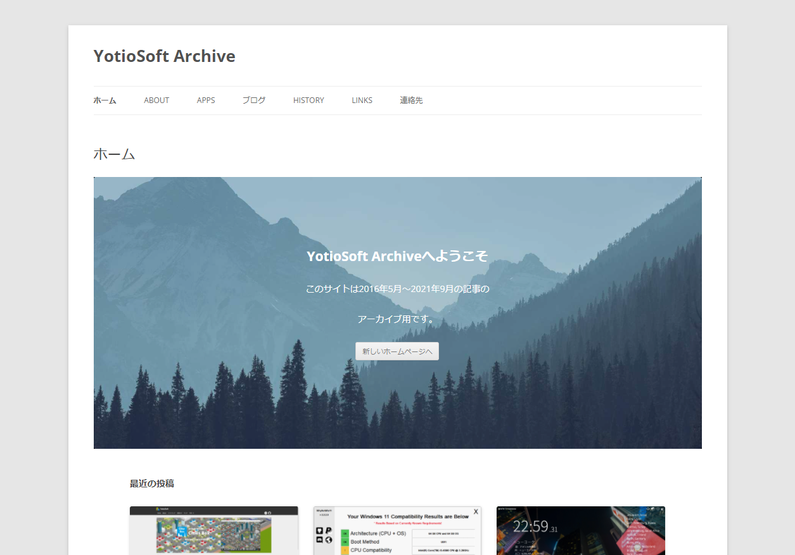

アーカイブサイトを公開しました
お知らせ
10月1日の当サイトへのホームページ移転に伴い、旧ホームページは閲覧できなくなります。
まだページの作成が完了していないコンテンツや、旧ホームページでしか公開していないコンテンツもありますので、旧ホームページの全記事・全ページをアーカイブサイトとして公開いたしました。
まだページの作成が完了していないコンテンツや、旧ホームページでしか公開していないコンテンツもありますので、旧ホームページの全記事・全ページをアーカイブサイトとして公開いたしました。

YotioSoft Archive
https://yotiosoftarchive.wordpress.com/
注意点
アーカイブサイト上では、一部の内部リンクがyotiosoft.comのままになっています。
見つけ次第リンクを修正しますが、サイト内のリンクの数が膨大なためすべてのリンクを修正するのは恐らく無理です。どうかご容赦ください。
また、アーカイブサイトは旧ホームページの内容をできる限りそのまま残すことを優先しているため、現在の配布状況や対応OS、公開中のURLとは異なる情報が含まれる場合があります。
旧作の雰囲気や当時の更新履歴、公開当時のスクリーンショットを確認したい場合には便利ですが、最新版の案内や現在も配布している作品については、なるべく yotiosoft.com 側の案内も併せてご確認ください。
今回アーカイブを用意したのは、移転作業の都合で過去記事や古い作品紹介が突然読めなくなってしまうのを避けたかったためです。
特に、昔公開していたソフトウェアの紹介ページや、すでに更新を終了している作品については、今後も参照される可能性があると考え、完全に削除するのではなく閲覧できる形で残すことにしました。
制作物は新しいものだけが価値を持つわけではなく、過去にどのような方向性のものを作っていたか、どの時期に何へ取り組んでいたかが見えることにも意味があると思っています。
そのため、このアーカイブサイトは単なる退避先ではなく、これまでの活動記録を参照できる保管庫としても活用していく予定です。
新サイト側の整備が進んだ後も、当時の記録をたどれる場所として一定の役割を持ち続けると考えています。
作品の配布が終了していても、スクリーンショットや説明文から当時の制作方針を読み取れることには資料的な価値があるため、今後も必要に応じて補修しながら維持していきます。
見つけ次第リンクを修正しますが、サイト内のリンクの数が膨大なためすべてのリンクを修正するのは恐らく無理です。どうかご容赦ください。
また、アーカイブサイトは旧ホームページの内容をできる限りそのまま残すことを優先しているため、現在の配布状況や対応OS、公開中のURLとは異なる情報が含まれる場合があります。
旧作の雰囲気や当時の更新履歴、公開当時のスクリーンショットを確認したい場合には便利ですが、最新版の案内や現在も配布している作品については、なるべく yotiosoft.com 側の案内も併せてご確認ください。
今回アーカイブを用意したのは、移転作業の都合で過去記事や古い作品紹介が突然読めなくなってしまうのを避けたかったためです。
特に、昔公開していたソフトウェアの紹介ページや、すでに更新を終了している作品については、今後も参照される可能性があると考え、完全に削除するのではなく閲覧できる形で残すことにしました。
制作物は新しいものだけが価値を持つわけではなく、過去にどのような方向性のものを作っていたか、どの時期に何へ取り組んでいたかが見えることにも意味があると思っています。
そのため、このアーカイブサイトは単なる退避先ではなく、これまでの活動記録を参照できる保管庫としても活用していく予定です。
新サイト側の整備が進んだ後も、当時の記録をたどれる場所として一定の役割を持ち続けると考えています。
作品の配布が終了していても、スクリーンショットや説明文から当時の制作方針を読み取れることには資料的な価値があるため、今後も必要に応じて補修しながら維持していきます。